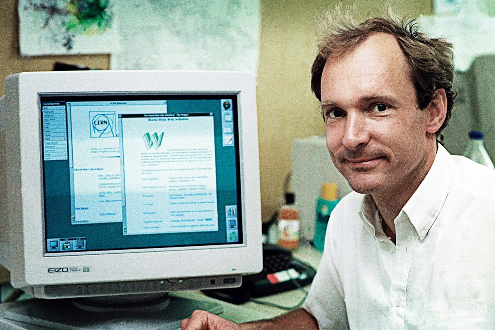
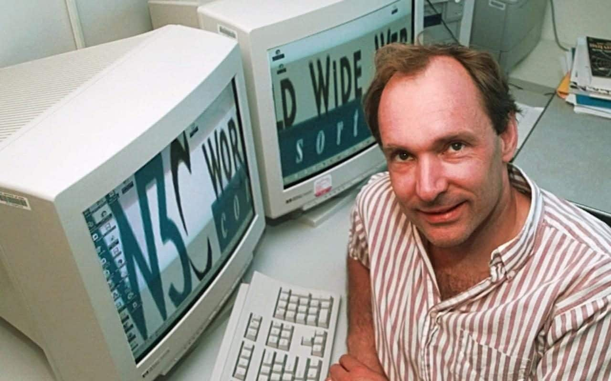

Internet
A internet foi criada em 1969, nos Estados Unidos. Chamada de Arpanet, tinha como função interligar laboratórios de pesquisa. Naquele ano, um professor da Universidade da Califórnia passou para um amigo em Stanford o primeiro e-mail da história

O criador
Em 1989, Tim Berners-Lee trabalhava na Organização Europeia para a Pesquisa Nuclear (CERN). Nesse período, ele desevolveu um projeto baseado em hipertextos. Era um protocolo que pegava as informações da internet e as organizava em blocos de textos, imagens e multimídia.

OBJETIVO DA INTERNET
A internet é uma rede mundial que tem como objetivo interligar computadores para fornecer ao usuário o acesso a diversas informações. Por isso é chamada de rede mundial de computadores.

QUEM ERA?
Físico e cientista da computação britânico, Berners-Lee é um dos grandes responsáveis pela internet como a conhecemos hoje.
O protocolo desenvolvido por esse cientista permitiu que o primeiro site fosse criado e que a troca de informações pela web se tornasse mais simples e rápida.
ORIGEM WWW
Mesmo que a internet já existisse desde a década de 1960, a ideia de “navegar na web”, acessando sites e se comunicando de forma instantânea, só começou a ser traçada a partir dos anos 1990.
Antes disso, como comentamos anteriormente, o uso da internet era extremamente limitado,
Você já deve estar imaginando quem conseguiu resolver isso, certo? Ele mesmo, Tim Berners-Lee: criador do sistema World Wide Web, o primeiro navegador de internet.

MAIS
Berners-Lee é o diretor do World Wide Web Consortium (W3C), que supervisiona o desenvolvimento continuado da web. Também é o fundador da World Wide Web Foundation e é um pesquisador sênior e titular e fundador da cadeira de 3Com no Laboratório de Inteligência Artificial e Ciência da Computação do MIT (CSAIL). É um diretor da The Web Science Research Initiative (WSRI) e um membro do conselho consultivo do Centro de Inteligência Coletiva do MIT . Em abril de 2009, foi eleito como membro da Academia Nacional de Ciências dos Estados Unidos, sediada em Washington, D.C. Em 2011, foi nomeado como um membro do conselho de administração da Fundação Ford